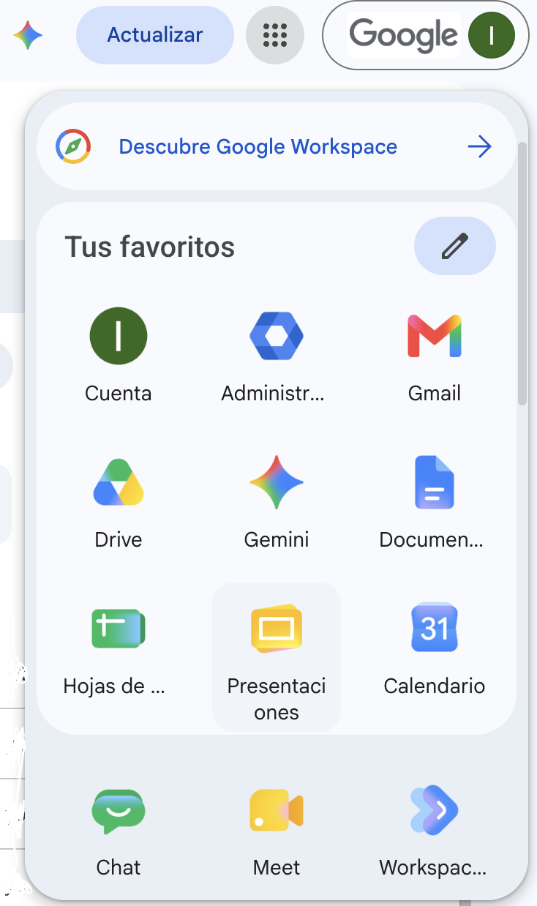
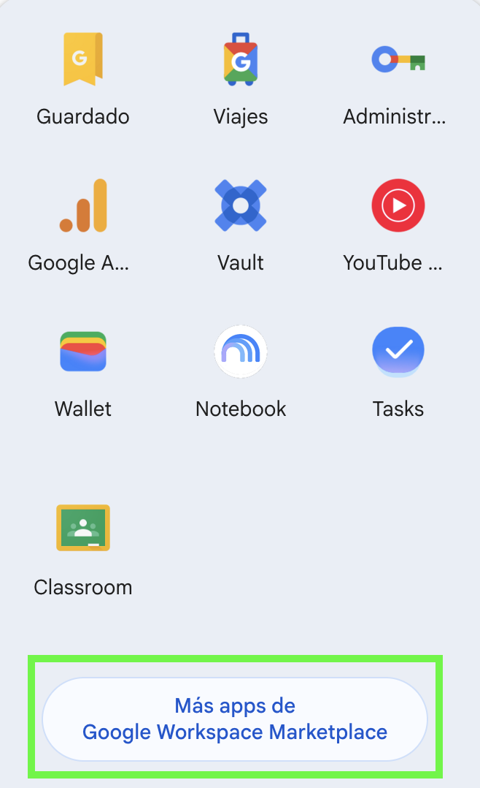
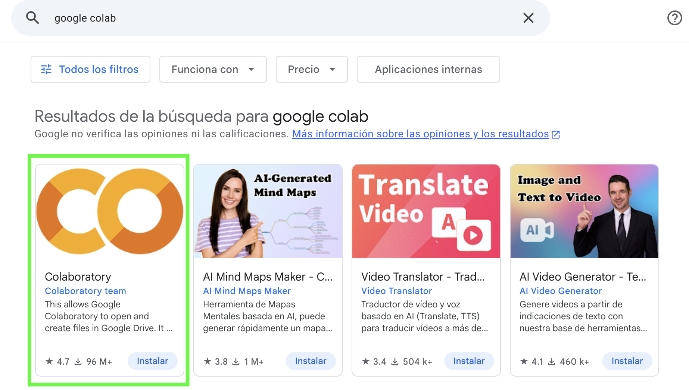
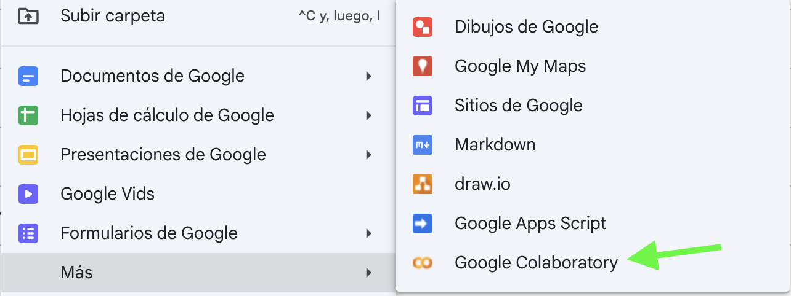
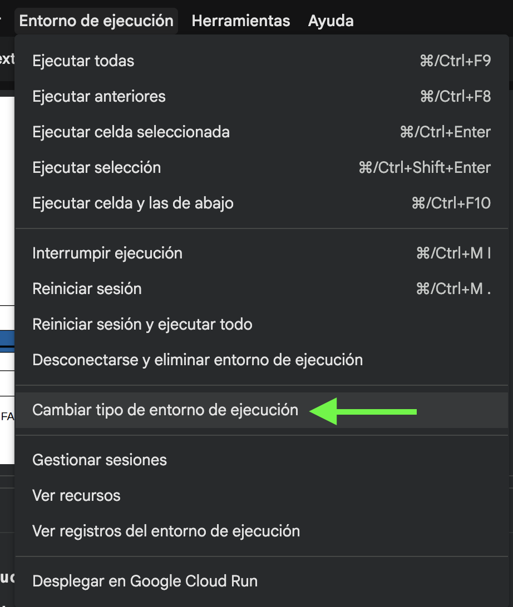
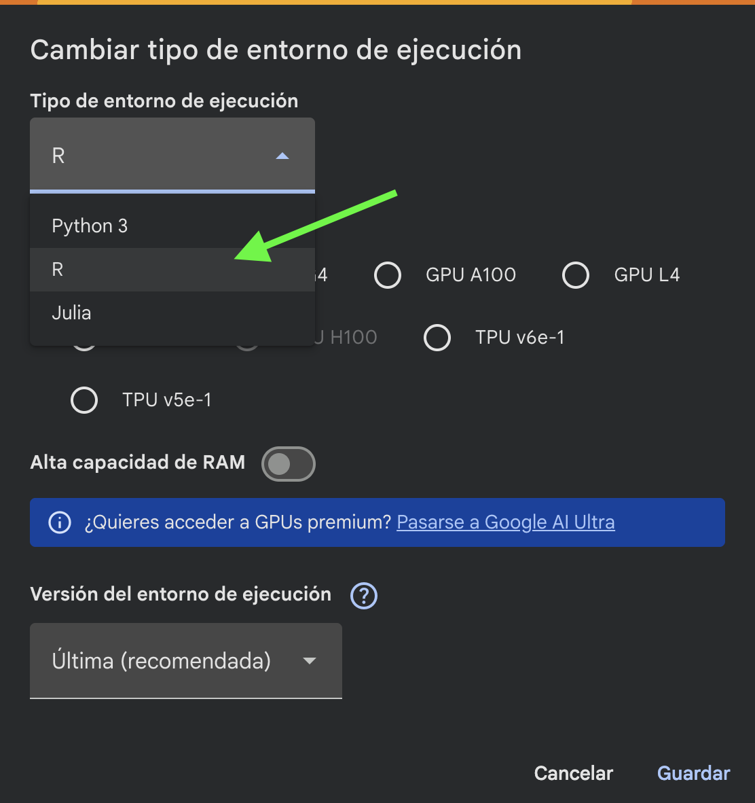

Incorporar aquí el primer tema de clase 2 y su aplicación computacional, conservando el orden de Sebastián.
Ver código y solución en R
R
# Desarrollar aquí el ejemplo de R correspondiente.Pendiente de completar después de ejecutar el código.
Plantilla de trabajo; contenido pendiente de desarrollar y validar con la cátedra.
La estructura conserva el formato de la clase 1. Los espacios de trabajo deben completarse antes de utilizar este material en clase.
Antes de comenzar el taller, debes poder acceder a Google Colaboratory (Colab) con tu cuenta de Google. Lo utilizaremos para abrir y ejecutar el notebook desde el navegador. Comprueba que esté disponible en las opciones de Google Drive; si todavía no aparece, conéctalo siguiendo estos pasos.
Inicia sesión con tu cuenta de Google. Abre el menú de aplicaciones y selecciona Drive.

Si todavía no tienes Colaboratory conectado, en Drive selecciona Nuevo → Más → Conectar más aplicaciones. También puedes abrir Más apps de Google Workspace Marketplace desde el menú de aplicaciones, como muestra esta imagen.

Busca Google Colab o Colaboratory y elige la aplicación Colaboratory, del equipo Colaboratory team. Pulsa Instalar y sigue los pasos de conexión a tu cuenta.

Vuelve a Drive: en Nuevo → Más debe aparecer Google Colaboratory. Si ya lo tienes disponible, puedes omitir la instalación y comenzar directamente.

Con el notebook abierto en Colab, ve a Entorno de ejecución → Cambiar tipo de entorno de ejecución. Allí puedes seleccionar el lenguaje que ejecutará las celdas.

En Tipo de entorno de ejecución, selecciona R y pulsa Guardar. Para este taller ejecutaremos R directamente: no necesitas %load_ext rpy2.ipython ni escribir %%R al inicio de cada celda. Si ya aparece R, conserva esa selección.

Puedes pulsar cada imagen para verla en tamaño completo. Después, descarga el notebook del taller y ábrelo desde Google Colab mediante Archivo → Subir notebook. El archivo del curso está preparado para trabajar directamente en R.
Aplicación oficial: Colaboratory en Google Workspace Marketplace.
Parte 1 · Econometría
Parte 2 · Ayudantía
Parte 3 · Ejercitación